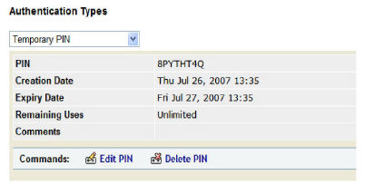
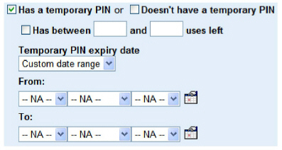

|
IdentityGuard Server 13.0 Administration Guide |
|
IdentityGuard Server 13.0 Administration Guide |
Administrators with appropriate permissions can search for users who have or do not have a temporary PIN.
This topic contains the following procedures:
● To view a user’s temporary PIN information
● To find users by temporary PINs
To view a user’s temporary PIN information
1. Log in to the Entrust IdentityGuard Administration interface as the administrator.
 On the
Windows computer where Entrust IdentityGuard is installed
On the
Windows computer where Entrust IdentityGuard is installed
2. Click User Accounts on the menu bar.
3. Find a specific user in one of two ways:
● use the Go To Account tab (see Search for information about a specific user)
● use the Find Accounts tab (see Searching for user information)
The View Account page appears.
4. Under Authentication Types on the user’s Account Information pane, select Temporary PIN.
Temporary PIN information and applicable command buttons appear.

From this page, you can
● create a temporary PIN (see Creating a temporary PIN for a user)
● edit temporary PIN information (see Modifying a user’s temporary PIN information )
● delete the temporary PIN (see Deleting a user’s temporary PIN)
To find users by temporary PINs
5. Log in to the Entrust IdentityGuard Administration interface as the administrator.
On the
Windows computer where Entrust IdentityGuard is installed
2. Click User Accounts on the main menu.
3. Click the Find Accounts tab.
4. Click Has the additional account characteristics below.
The Additional Account Characteristics pane appears.
5. Look for the temporary PIN options.

6. To find users with a temporary PIN, select Has a temporary PIN.
More options appear.
a. To find users with specified range of uses left, select Has between [ ] and [ ] uses left, then:
– To find users with a minimum number of uses left or more, enter the minimum number in the first text field.
For example, enter 3 in the first text field to find users with 3 or more uses left.
Note: Finding users with a minimum number of uses left or more also finds users with an unlimited number of uses left.
– To find users with a maximum number of uses left or fewer, enter the maximum number in the second text field.
For example, enter 4 in the second text field to find users with 4 or fewer uses left.
– To find users with any number of uses left in a range, enter the minimum number in the first text field, and enter the maximum number in the second text field.
For example, to find users with 1, 2, or 3 uses left, enter 1 in the first text field and enter 3 in the second text field.
b. To find users whose temporary PIN expires within a specific date range, select a date range from the Temporary PIN expiry date drop-down list.
If you selected Custom date range, choose a date range from the From and To drop-down lists (day, month, year), or click the calendar icons to select dates.
7. Alternatively, to find users who do not have temporary PINs, select Doesn’t have a temporary PIN.
8. Select other search options as applicable (see Searching for user information for more information).
9. Click Find Accounts.
The Search Results page appears.
10. Click a user name.
The Account Information pane appears.
11. Under Authentication Types, select Temporary PIN and review the temporary PIN details.